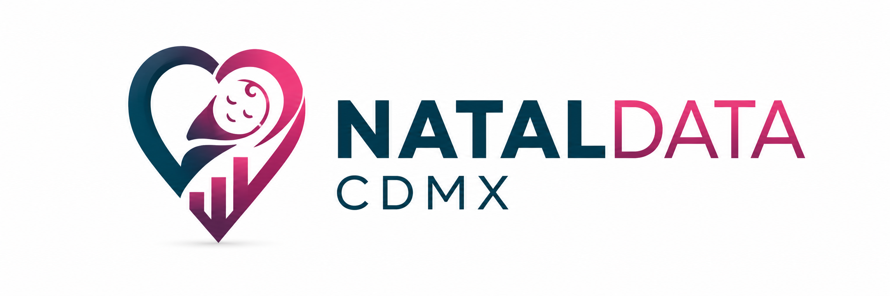

Explora datos de nacimientos en esta urbe dentro del periodo 2013-2023 de manera clara, interactiva y accesible. Analiza tendencias, consulta estadísticas y comprende la información de forma visual.
Explorar datosConsulta tablas organizadas por año y alcaldía.
Analiza tendencias mediante gráficas intuitivas.
Explora la distribución geográfica de los nacimientos.
Es una plataforma que utiliza datos abiertos del sistema de salud para facilitar la consulta y análisis de información sobre nacimientos en la Ciudad de México.
Está diseñada para apoyar la investigación, la toma de decisiones y el acceso a la información pública.